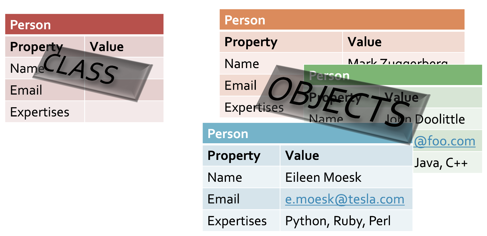
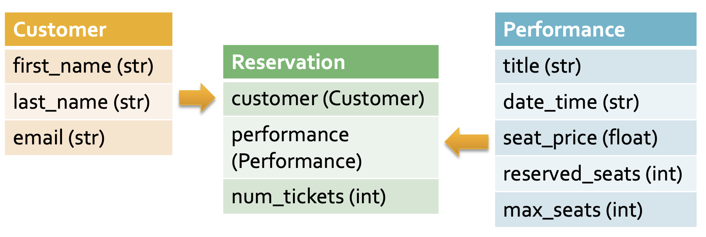

11. Object-oriented programming#
You already know that Python is an object-oriented programming language and have seen some aspects of it.
For instance, the dot operator that lets you access methods on objects, like in this fragment:
message = 'Howdy, Mike'
message2 = 'Howdy, Rose'
message.replace('Howdy', 'Bye')
Here, the string instances named message and message2 are defined. In the third line, the dot operator is applied to the instance named message to call its method replace(). Since replace() is called on this particular instance, the replacement is applied to the data stored in the string instance message, not in the data of message2.
So, although the method is defined in the blueprint of all string objects, class str, when the method is called it will work on the actual data of the current instance on which the method is called.
This is the essence of object-oriented programming.
11.1. Classes and Objects#
In this programming paradigm classes form the blueprint for creating objects (also called instances).

Although Python provides a wealth of classes - and you have already seen quite a few: str, int, set, dict, list, etc.- there are many occasions where the need for custom classes arise.
The key point of using classes is to combine data and related functionality (methods) into a single entity. Before embarking on a little (slightly) realistic example let’s have a look at a minimal class and build some data and functionality into it.
Here is a Duck class that does absolutely nothing:
class Duck:
pass
However, there is something you can do with it: you can create a Duck instance:
mallard = Duck()
The duck instance named mallard is a single “materialization” of the Duck blueprint. Although you might think there is no functionality attached to the class, actually there is. You can print() it for instance.
print(mallard)
<__main__.Duck object at 0x103f3a160>
By printing it, you get to see the name of the objects’ class, where it was defined, en where this instance lives in memory. When a new instance is created, it will only have a different memory address:
print(mallard)
shellduck = Duck()
print(shellduck)
<__main__.Duck object at 0x103f3a160>
<__main__.Duck object at 0x103f3aac0>
11.2. Class object, the mother of all classes#
Any object is printable because there is a base class named object that already specifies some behaviour that is usefull for all data types you can think of: printing, testing for equality, that sort of thing
So, although you say this:
class Duck:
pass
you actually get this
class Duck(object):
pass
Which says: “Duck inherits (is a subtype of) from class object”
When you inherit from class object, you get all the functionality defined in that class, and that is quite a collection. In the console, when you Define a Duck class, create an instance (d = Duck()) and type d._ followed by a tab (completion) or dir(d), you see something like this listing:
__class__, __delattr__, __dict__, __dir__, __doc__, __eq__, __format__,
__ge__, __getattribute__, __gt__, __hash__, __init__, __init_subclass__,
__le__, __lt__, __module__, __ne__, __new__, __reduce__, __reduce_ex__,
__repr__, __setattr__, __sizeof__, __str__, __subclasshook__, __weakref__'
These are the main hooks used by the Python language that have a default implementation (and therefore defined in class object). Some are properties, some are methods. For instance, the hash() method makes it possible to get a hash code from any object using the hash() method. Here are some examples.
pintail = Duck()
print('The hash code is', hash(pintail)) # calls __hash__()
print('The class is', type(pintail)) # calls __class__()
print('The class attribute is', pintail.__class__) # direct access to attribute
print("mallard equals pintail: ", mallard == pintail) # calls __eq__()
The hash code is 272579214
The class is <class '__main__.Duck'>
The class attribute is <class '__main__.Duck'>
mallard equals pintail: False
11.2.1. Inheritance#
Inheritance is one of the key concepts of the object-oriented programming paradigm. Classes can be defined to be subclasses of other classes. In the example above, class Duck is said to be a subclass of class object. By being a subclass, a class inherits all data and -especially- functionality from its superclass. It is a very interesting topic, extremely relevant to designing applications, but also very much out of scope for this course.
11.3. Adding behaviour#
11.3.1. Learn to swim#
If we want to have a use for this duck we could give it something to do: swimming for instance.
class Duck:
def swim(self):
print('quack quack')
eider = Duck()
eider.swim()
quack quack
Here is a class specifying behaviour (a method) but one single property (data / variables). Don’t worry about the self and __init__() just yet - it will be addressed in the next section.
class Duck:
def __init__(self, name):
self.name = name
def swim(self):
print(f'quack quack I am a {self.name}')
ruddy_duck = Duck("Ruddy Duck")
ruddy_duck.swim()
quack quack I am a Ruddy Duck
11.4. A more realistic example#
Suppose you have a small theater and want to have a system for managing your reservations. Since you are a beginning Python enthousiast you decide to program it yourself.
The first thing any good (OO-)programmer would do is to model the entities and their relations within the application.

Yes! This looks an awful lot like a database diagram (ERD), except for the missing id fields.
Naming conventions
You may have noticed the use of uppercase characters as first letter of the classes. This is one of the PEP 8 style guide conventions. It states that
Class names should normally use the CapWords convention.
Function names should be lowercase, with words separated by underscores as necessary to improve readability.
The next step is of course implementing these classes. You usually start at the simplest classes, without any reference to classes that have not been created yet.
Therefore we’ll start with the Customer class.
class Customer:
def __init__(self, first_name, last_name, email):
self.first = first_name
self.last = last_name
self.email = email
cust1 = Customer("Pete", "Walsh", "p.walsh@example.com")
print(f'A Customer! {cust1.first} is coming. His email is {cust1.email}')
A Customer! Pete is coming. His email is p.walsh@example.com
11.4.1. The constructor: __init__()#
As seen before, the keyword class is used to communicate there is a class definition - an object blueprint. The __init__() method is called the constructor method because it is used to construct an object: an instance of the class. A constructor can receive arguments that are required to have a cvorrect, functional instance of the class.
You never call the __init__() method directly!
The Customer(...) expression is where a new Customer instance is created. The __init__() method is invoked by the Python interpreter and the self reference is injected and a reference to the object in memory is returned (and bound to cust1.
11.4.2. The injected self argument#
There is something special going on in there: the self method argument. In OO-Python, all methods invoked on an instance will receive as first argument -inserted by the Python interpreter- a reference to the current executing object and convention states that you name it self.
Because you have a reference to the current executing object you can attach, access and modify its data using this reference.
11.5. Object and interpreter hooks#
The __init__() method is one of the many object and interpreter hooks that exist in Python. They are called “dunder” methods because of the “double underscores”. When you implement these, they let you interact with operators and built-in functions.
The __init__() hook makes it possible to hook into the () construction process by defining an argument list. In the listing in a previous paragraph some hoks are specified in class object. We will see a few more hooks later in this chapter.
See for instance here for more details.
11.5.1. Implement some hooks#
When you print the object reference itself you get something like this:
The __str__() method is a hook for interacting with the print() built-in. When print receives an object to print it will look for the __str__() method and call it.
print(cust1)
<__main__.Customer object at 0x103f3ac40>
Hooks str() and repr()
Hooks __str__() and __repr__(), targeting the built-in functions str() and repr() respectively, are both used to get a string representation of an object. However, their intent is different:
str()is used for generating human-readable output whilerepr()is mainly used for debugging and development.repr’s goal is to be unambiguous and str’s is to be readable
repr()fetches the “formal” string representation of an object (a representation that has all information about the object) andstr()is used to fetch the “informal” string representation of an object.The
print()andstr()built-in function use__str__()to display the string representation of the object while therepr()built-in function uses__repr__()to display the object.
This output says it is an instance of the Customer class that is defined in the __main__ scope and that it can be found at memory “location” 0x7fbe709e8fa0 - not very informative.
Time to implement __str__().
11.5.2. The Performance class#
Similar to the Customer class we can now implement the Performance class. The properties listed above are “title”, “datetime”, “seat_price”, “max_seats” and “reserved_seats”. All properties except the last one (which will simply default to 0) are useful to specify at construction time. Here is a first version.
class Customer:
def __init__(self, first_name, last_name, email):
self.first = first_name
self.last = last_name
self.email = email
def __str__(self):
return f'{self.first} {self.last} [{self.email}]'
cust2 = Customer("Julia", "Marsh", "j.marsh@example.com")
print(cust2)
Julia Marsh [j.marsh@example.com]
class Performance:
def __init__(self, title, datetime, seat_price, max_seats):
self.title = title
self.datetime = datetime
self.seat_price = seat_price
self.max_seats = max_seats
self.reserved = 0
def __str__(self):
return f'{self.title} ({self.datetime} - €{self.seat_price}); reserved {self.reserved} out of {self.max_seats}'
perf1 = Performance("The Tempest", "2022/12/20 20:00H", 12, 50)
print(perf1)
The Tempest (2022/12/20 20:00H - €12); reserved 0 out of 50
The coding pattern here is similar to the Customer class. One thing warrants some attention: The use of a string to specify datetime. Working with actual date/time data is a very important topic of course but out of scope in this course. In a more realist setting we would have done something like this:
from datetime import datetime
dt = datetime.strptime("2022/12/20 20:00H", "%Y/%m/%d %H:%MH")
perf1 = Performance("The Tempest", dt, 12, 50)
11.5.3. The Reservation class#
The Performace class is not ready - we will need to implement some means to process reservations. To do that we need a Reservation class first:
class Reservation:
def __init__(self, customer, performance, num_tickets):
self.customer = customer
self.performance = performance
self.num_tickets = num_tickets
def __str__(self):
return f'Reservation by {self.customer.first} for {self.performance.title}: {self.num_tickets} tickets'
def __repr__(self): # needed for printing when in container
return f'name={self.customer.first} {self.customer.last}, tickets={self.num_tickets}'
res1 = Reservation(cust1, perf1, 4)
print(res1)
Reservation by Pete for The Tempest: 4 tickets
11.5.4. Finish Performance#
Next, an add_reservation() and tickets_sold() method are added, and a check on each reservation to assure we are not sold out yet:
def add_reservation(self, reservation):
'''Add a reservation to this performance.
Raises a valueError when sold out'''
if self.tickets_sold() + reservation.num_tickets > self.max_seats:
raise ValueError(f'only {self.max_seats - self.tickets_sold()} seats available')
self.reservations.append(reservation)
def tickets_sold(self):
'''Get the number of tickets sold'''
total = 0
for res in self.reservations:
total += res.num_tickets
return total
11.5.5. Bring it all together#
Below is the finished Performance class, and some example use.
class Performance:
def __init__(self, title, datetime, seat_price, max_seats):
self.title = title
self.datetime = datetime
self.seat_price = seat_price
self.max_seats = max_seats
#self.reserved = 0 # not used anymore
self.reservations = list() # a list to store reservations
def __str__(self):
return f'{self.title} ({self.datetime} - €{self.seat_price}); reserved {self.tickets_sold()} out of {self.max_seats}'
def add_reservation(self, reservation):
'''Add a reservation to this performance.
Raises a valueError when the reservation size exceeds the available seats.'''
if self.tickets_sold() + reservation.num_tickets > self.max_seats:
raise ValueError(f'only {self.max_seats - self.tickets_sold()} seats available')
self.reservations.append(reservation)
def tickets_sold(self):
'''Get the number of tickets sold'''
total = 0
for res in self.reservations:
total += res.num_tickets
return total
perf2 = Performance("Hamlet", "2023/01/18 20:00H", 15, 50)
print(perf2)
res2 = Reservation(cust1, perf2, 4)
print(res2)
perf2.add_reservation(res2)
print(perf2)
## How do you test sold out? Try it!
Hamlet (2023/01/18 20:00H - €15); reserved 0 out of 50
Reservation by Pete for Hamlet: 4 tickets
Hamlet (2023/01/18 20:00H - €15); reserved 4 out of 50
11.5.6. Implementing an iteration hook#
It would be very nice to be able to iterate the Performance class on its reservations. All you need to do is implement the __iter__() and __next__() hooks:
# should return an object responsible for iteration. Here: the object itself.
def __iter__(self):
self.index = 0
return self
# is responsible for the actual iteration process.
def __next__(self):
if self.index < len(self.reservations):
res = self.reservations[self.index]
self.index += 1
return res
else:
raise StopIteration # required to end the iteration.
The __iter__() method is called when an instance of your class is used in an iteration context such as a for loop or collection constructors. It is expected to return an object that will actually do the iteration. Usually this is the object itself, but you can delegate to instance variables that are iterable objects themselves as shown below.
class ListWrapper:
def __init__(self, seed_elements):
self.elements = list()
if seed_elements: # non-empty
self.elements.extend(seed_elements)
def addElements(self, elements):
self.elements.extend(elements)
def __iter__(self):
return self.elements.__iter__()
lw = ListWrapper([2, 4, 1])
lw.addElements([6, 3])
for e in lw:
print(e, end= " - ")
2 - 4 - 1 - 6 - 3 -
Below is the complete finsihed Performance class.
class Performance:
def __init__(self, title, datetime, seat_price, max_seats):
self.title = title
self.datetime = datetime
self.seat_price = seat_price
self.max_seats = max_seats
self.reservations = list() # a list to store reservations
def __str__(self):
return f'{self.title} ({self.datetime} - €{self.seat_price}); reserved {self.tickets_sold()} out of {self.max_seats}'
def add_reservation(self, reservation):
'''Add a reservation to this performance.
Raises a valueError when the reservation size exceeds the available seats.'''
if self.tickets_sold() + reservation.num_tickets > self.max_seats:
raise ValueError(f'only {self.max_seats - self.tickets_sold()} seats available')
self.reservations.append(reservation)
def tickets_sold(self):
'''Get the number of tickets sold'''
total = 0
for res in self.reservations:
total += res.num_tickets
return total
def __iter__(self):
self.index = 0
return self
def __next__(self):
if self.index < len(self.reservations):
res = self.reservations[self.index]
self.index += 1
return res
else:
raise StopIteration
Here is the iteration process in action.
perf3 = Performance("Romo and Julia", "2023/03/08 20:00H", 15, 40)
res3 = Reservation(Customer("Julia", "Marsh", "j.marsh@example.com"), perf3, 4)
perf3.add_reservation(res3)
res4 = Reservation(Customer("Peter", "Dole", "p.dole@example.com"), perf3, 2)
perf3.add_reservation(res4)
res5 = Reservation(Customer("Alex", "Walsh", "a.walsh@example.com"), perf3, 5)
perf3.add_reservation(res5)
print(perf3)
for res in perf3:
print(f'Reservation for {res.customer.first}: {res.num_tickets} tickets')
Romo and Julia (2023/03/08 20:00H - €15); reserved 11 out of 40
Reservation for Julia: 4 tickets
Reservation for Peter: 2 tickets
Reservation for Alex: 5 tickets
Notice the chaining of the dot operator to access object that are properties of objects: res.customer.first.
There are many more hooks you can implement; for indexing (__getitem__()), comparison (__eq__()) and many more.
Here is the link again to the website going deeper into the topic.
This finishes this example. Can you improve or extend on the design?
11.5.7. An alternative iteration#
Alternatively, you can implement iteration using __getitem__():
class PerformanceAltIt:
def __init__(self, title, datetime, seat_price, max_seats):
self.title = title
self.datetime = datetime
self.seat_price = seat_price
self.max_seats = max_seats
self.reservations = list() # a list to store reservations
def __str__(self):
return f'{self.title} ({self.datetime} - €{self.seat_price}); reserved {self.tickets_sold()} out of {self.max_seats}'
def add_reservation(self, reservation):
'''Add a reservation to this performance.
Raises a valueError when the reservation size exceeds the available seats.'''
if self.tickets_sold() + reservation.num_tickets > self.max_seats:
raise ValueError(f'only {self.max_seats - self.tickets_sold()} seats available')
self.reservations.append(reservation)
def tickets_sold(self):
'''Get the number of tickets sold'''
total = 0
for res in self.reservations:
total += res.num_tickets
return total
def __getitem__(self, k):
return self.reservations[k]
perf4 = PerformanceAltIt("Romo and Julia", "2023/03/08 20:00H", 15, 40)
res3 = Reservation(Customer("Julia", "Marsh", "j.marsh@example.com"), perf4, 4)
perf4.add_reservation(res3)
res4 = Reservation(Customer("Peter", "Dole", "p.dole@example.com"), perf4, 2)
perf4.add_reservation(res4)
res5 = Reservation(Customer("Alex", "Walsh", "a.walsh@example.com"), perf4, 5)
perf4.add_reservation(res5)
print(perf4)
#iteration: no problem
for res in perf4:
print(f'Reservation for {res.customer.first}: {res.num_tickets} tickets')
#indexing and slicing
print(perf4[0:2])
Romo and Julia (2023/03/08 20:00H - €15); reserved 11 out of 40
Reservation for Julia: 4 tickets
Reservation for Peter: 2 tickets
Reservation for Alex: 5 tickets
[name=Julia Marsh, tickets=4, name=Peter Dole, tickets=2]
11.6. The main hooks#
__init__(): used by constructor new Instance()__str__(): used bystr( )(andprint())__repr__(): used byrepr()(andprint()when it does not find a__str__())__iter__()and__next__()to implement iteration. Alternatively, this can be done using__len__()and__getitem__()